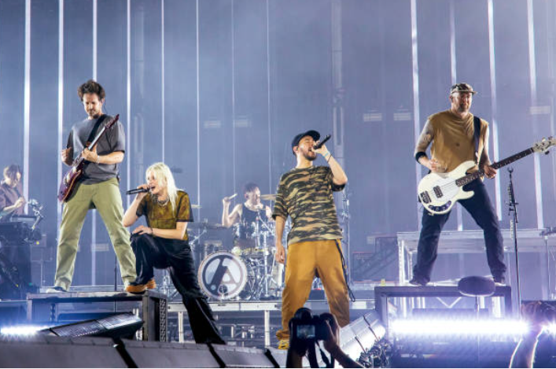
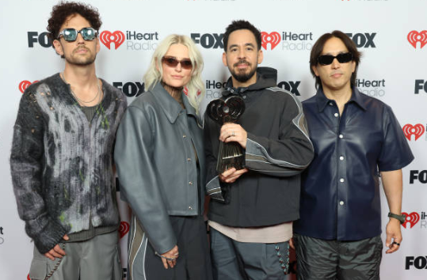

From Zero é o oitavo álbum de estúdio do Linkin Park, lançado em 15 de Novembro de 2024, pela Warner Bros.
Records. É o primeiro álbum que conta com a vocalista Emily Armstrong, que substituiu o falecido Chester
Bennington, e o baterista Colin Brittain, que entrou no lugar de Rob Bourdon, por ter decidido deixar a banda. O
disco é uma junção de todas as eras da banda, composto principalmente por nu metal, alternative metal, rap rock,
pop rock e música eletrônica. Mike Shinoda foi o principal produtor do álbum. Teve 4 singles: The Emptiness
Machine, Heavy is the Crown, Over Each Other e Two Faced. Estreou em 2° na Billboard 200, mas foi o grande
destaque nas paradas de Rock, como a Top Rock Albums, Top Alternative Albums e Top Hard Rock Albums. Até o momento
vendeu mais de 1 milhão e 500 mil cópias.
Primeira imagem oficial da nova formação do Linkin Park
Novos nomes, a mesma alma
Após a morte de Chester Bennington em 2017, Mike Shinoda sempre deixou evidente o seu desejo de voltar com a
banda. “Tenho toda a intenção de continuar com o LP, e os caras sentem o mesmo. Temos muita reconstrução a fazer e
perguntas a responder, então vai levar tempo.” O grupo começou a se encontrar com Emily Armstrong em 2019.
Originalmente, Mike, Dave Farrell, Joe Hahn e Brad Delson estavam escrevendo músicas apenas por escrever músicas e
estavam colaborando com muitos artistas, mas de acordo com Shinoda, muitas pessoas diziam que eles deviam
trabalhar com Emily. Sobre a saída de Rob Bourdon, Mike disse à Billboard 200: “Tivemos uma conversa há pouco,
alguns anos atrás, na mesma época, em que ele disse que queria se afastar. Não falamos sobre isso em público
porque não sabíamos como isso funcionaria. Os fãs perceberam, lançamos um monte de coisas e ele não participou de
nenhuma das entrevistas ou do marketing. E é por isso. Sempre amaremos o cara. Sempre respeitaremos as coisas
maravilhosas que construímos juntos. Com a ausência dele sendo uma coisa real, eu já estava trabalhando com
Colin.”
A integração de Emily na banda ocorreu em etapas, mas de acordo com Mike, a virada de chave ocorreu quando o grupo
estavam reunidos: “Quase do nada, Joe — estávamos sentados conversando sobre as novas músicas que estávamos
compondo, e tínhamos mais de uma dúzia de músicas que gostávamos naquele momento, e Em tinha cantado uma parte ou
um refrão em uma ou duas delas e backing vocals em algumas, e Joe disse: 'Você acha que poderíamos fazer uma
demonstração da voz dela como vocalista principal, como se fosse só ela na música inteira, só para ver como fica?'
E eu disse: 'Esse cara acredita'. Eu sei que ela vai aceitar, sei que ele vai ouvir e vai gostar. Positivo. O fato
de ele ter chegado a essa conclusão antes mesmo de eu sugerir qualquer coisa foi um grande negócio.” Eu vi Colin e
Emily se apoiando. Eles diziam: 'Somos os novatos! Vamos ensaiar mais, vamos fazer tudo certo'. E eles meio que
seguiram sozinhos e passaram um tempo juntos para resolver coisas que sabíamos porque fazíamos isso há 20 anos.
Sobre os novos membros, Emily e Colin, Shinoda disse: “Eu percebi: 'Meu Deus. Acidentalmente acabamos nessa
dinâmica maravilhosa em que eles têm um ao outro'. Além de tocar, eles conseguem se identificar e falar sobre
isso, tipo: 'Você acredita que estamos aqui fazendo isso? Isso é estranho!” Armstrong confirmou isso, dizendo: “Eu
não conseguiria fazer isso sozinha. É como uma bênção tê-lo comigo em todo esse processo, e eu não percebi até que
a pressão passou e nós pensamos: 'Temos um ao outro para isso...' Acho que não teria tido tanta graça sem
ele.”
No dia 24 de agosto de 2024, a banda lançou em suas redes um timer de 100 horas. Quando o timer acabou, exibiu o
horário 09:05, e a mensagem “Be part of something”. O Linkin Park voltou oficialmente no dia 5 de setembro do
mesmo ano, com um show privado nos estúdio da Warner Bros. Records, performando pela primeira vez o single The
Emptiness Machine.
Linkin Park em 2024 performando The Emptiness Machine, o primeiro
show com Emily Armstrong e Colin Britain, Burbank
A arte de recomeçar
Assim como nos velhos tempos, Frank Maddocks, Mike e Joe foram os responsáveis pela direção artística. O fotógrafo
James Minchin III também esteve presente na produção do álbum.
Sobre a capa do álbum, Shinoda comentou: "Isso é superinteressante. É tudo fotografia, sem CGI. São fotos em close
de elementos da vida real, líquidos e sólidos, e luzes. Também gravamos vídeos e estamos usando isso em coisas
diferentes." Frank, o fotógrafo Bryan Ziff e o artista Josh Foster explicaram que eles experimentaram uma série de
telas e meios líquidos diferentes para criar as texturas fluidas vistas na arte oficial.
O título do álbum carrega um duplo sentido, ele se refere ao nome original da banda, Xero, além de referenciar o
novo começo com Emily e Colin.

Linkin em 2025 durante o From Zero World Tour, Monterrey
Um comeback lendário
Marcando um retorno épico, o From Zero foi uma junção de todas as eras da banda, e recebeu críticas geralmente
positivas. Neil Z. Yeung do Allmusic escreveu: “From Zero é um esforço decente que contém todas as marcas
registradas da banda, mesmo que não seja exatamente o mesmo Linkin Park que é conhecido e amado.” Luke Morton da
Kerrang! disse: “Claro, nem toda música é algo para se escrever para casa, e nem todo mundo vai embarcar com um
novo vocalista, mas como um trabalho, é um lembrete claro de por que o Linkin Park atingiu as alturas que alcançou
e continua a influenciar várias gerações de artistas.” Merlin Alderslade escrevendo para a Metal Hammer concluiu
que "é uma homenagem sincera ao seu próprio legado."
O disco estreou no 2° lugar da Billboard 200, mas chegou em 1° nas principais paradas do rock, como a Top Rock
Albums, Top Alternative Albums e Top Hard Rock Albums. Em sua primeira semana nos EUA, vendeu mais de 97 mil
cópias, enquanto recebeu mais de 32 milhões de streams nas principais plataformas de música. Até o momento, vendeu
mais 1 milhão e 500 mil cópias. Foi um sucesso absoluto, marcando uma das voltas de banda mais icônicas da
história.

Linkin Park no iHeartRadio Music Awards 2025, com o prêmio pelo
melhor álbum de rock de 2024
O mundo testemunha a mudança
Para o From Zero, álbum que marcou a nova fase do Linkin Park com uma formação renovada e o retorno oficial da
banda após sete anos, se destacou a seguinte turnê:
- From Zero World Tour, turnê mundial principal de divulgação do álbum, teve início em setembro de 2024 e ainda
está em andamento, com shows na Europa, América do Norte, Ásia e Oceania. Foi a primeira grande turnê da banda
desde 2017 e teve como principal novidade a presença de Emily Armstrong nos vocais e Colin Brittain na bateria. Os
shows equilibraram energia e emoção, com setlists que uniam os maiores clássicos da banda e músicas do From Zero.
A nova formação trouxe um clima de renovação, mas sem abandonar o peso emocional e o legado da banda. O palco
contou com uma produção moderna, com telões de LED e jogos de luz dinâmicos, porém sem exageros, o foco esteve na
performance da banda e na conexão direta com o público. Destaque para apresentações esgotadas em Paris, Los
Angeles, Tóquio e São Paulo, onde a banda foi recebida com entusiasmo e emoção pelos fãs.
A From Zero World Tour representa um novo capítulo para o Linkin Park, não como uma substituição do passado, mas
como um passo corajoso rumo ao futuro.
Linkin Park em 2024 performando Heavy is the Crown na Final do
Mundial de League of Legends, Londres